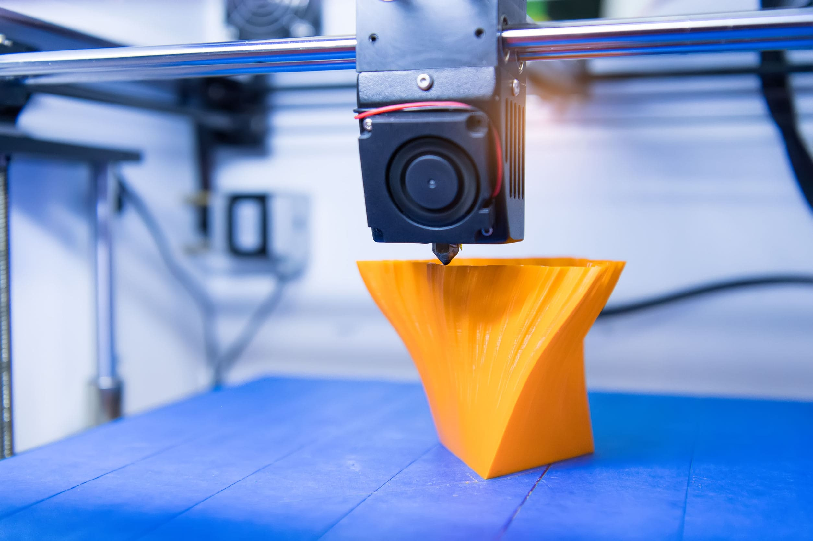
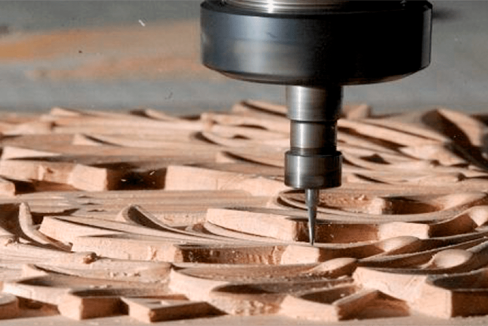
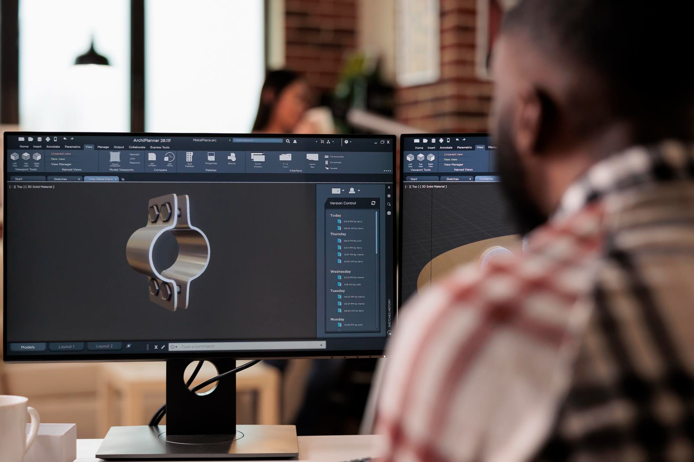

Especialistas en fabricación de pequeños productos
Métodos de conformación
Aditivo
La impresión 3D, también llamada manufactura por adición, es un conjunto de procesos que producen objetos a través de la adición de material en capas que corresponden a las sucesivas secciones transversales de un modelo 3D. Los plásticos y las aleaciones de metal son los materiales más usados para impresión 3D, pero se puede utilizar casi cualquier cosa. En Practical Thinking utilizamos termoplásticos como PLA, ABS, HIPS, NYLON 6, PETG, entre otros, dependiendo de tu necesidad.
Sustractivo
El desbaste de material CNC, se utiliza para producir objetos quitándole material a una morfología base, mediante capas de arranque de viruta. Utilizamos materiales como MDF, maderas naturales o aluminio.
Impresiones
Creación de gráficas para elementos de merchandising, vinilos o descartables.
Prototipado o productos en baja serie
Con ambos tipos de conformación, podemos lograr desde una única pieza a un bajo costo, a una serie pequeña de productos, sin necesidad de inversiones altas.
